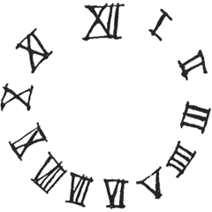

［＃ページの左右中央］
詩集
［＃改段］
［＃ページの左右中央］
堀口大學に
［＃改段］
數奇なるはわがうたの運命なるかな。かつては人に泣かれしものを、いまは世に喜ばるるとぞ。しかも評家は指ざし哂ひて餘技なるのみといふ。或は然らむ。魯なるわれは餘技なるもののために命をささげ來にけらし、志してより二十年のこの朝夕を。かくてわが青春のかたみにと一卷の歌ぐさぞ僅にわれにのこりたる。心すなほなる時には稚き言葉なほおぼつかなく、言葉やや長けにしとおもへば心はすでに彈みなし。いのち短きものいかでかひとり麗人のみならむや。もみぢの下葉なす今日のものをさへ加へて、數ふればわがうたの百にも足らはぬこといと口惜し。古人は螢雪を説きぬ、げに一ときを惜むべきものただに春宵のみにはあらざりけらし。或はゆたかなる才のまにまに春蠶のよく絹を吐いて、千首詩こそ萬戸侯を輕んじもせむ。たとひ一吟に雙涙をながすとも百にも滿たぬうたかたのわが歌をはたなにとかせむ。人のわれを指ざして哂ふもげにうべなりと知りぬ。いとせめて百年ののちわがうた一つ世にあれよと願はば、さてもわが魯なることの證をさらにひとつ増すのみに過ぎざらむか。しばし千 なるおもひにふけりてさて筆を擱く。大正十五年三月ついたちたまたま病める父をみとりせむとて歸れる故山の雨の夕べに
なるおもひにふけりてさて筆を擱く。大正十五年三月ついたちたまたま病める父をみとりせむとて歸れる故山の雨の夕べに
なるおもひにふけりてさて筆を擱く。大正十五年三月ついたちたまたま病める父をみとりせむとて歸れる故山の雨の夕べに佐藤春夫しるす
北風よ起れ、南風よ來れ、わが園を吹いてその香氣を揚げよ、願くはわが愛する者のおのが園にいりきたりてその佳き果を食はんことを
雅歌第四章十六
幼き歌
きよく
かがやかに
たかく
ただひとりに
なんぢ
星のごとく。
［＃改段］
ここに來て
をみなにならひ
名も知らぬ草花をつむ。
みづからの影踏むわれは
燈臺の高きを知らず。
波のうね／＼
ふる里のそれには如かず。
ただ思ふ
錆びて黒きを。
わがこころ
錆びて黒きを。
［＃改段］
がらす障子を
ゆすぶりて
夜ふく風を
にくむなり。
かひなき人を
かた戀の
われを哂ふと
ふく風よ。
あざけりは
君を落葉と
おもへとや。
［＃改段］
筒井筒をさなかりしころの友垣の女の童ははやく年たけて嫁ぎゆくこそ悲しくも甲斐なけれ
人妻の双のたもとはみぢかしや あはれ
［＃改段］
同心草
こはこれわが未だをとめなりし頃のうつし繪なり。さらば、げに君にこそはおくらめ。をかしき姿をな笑ひそ。ゆめ、人にな示しそ。心せよ、わが片身なるものを。かく言ひて、人のひそかにわれに與へたるひとひらの紙の上には、手に團扇もちて立てる舞姫姿の君ありき。ながめ入りつつ、さてわが言ひ出でし言葉は癡にして歌に似たりき。
かなしく白くうつくしく
わが心こそそぞろなれ。
あはでむなしく過ぎにける
夕月あはき
ああかかる日に君をみて
かたりし人ぞ嫉ましき。
［＃改段］
君を見ぬ日のうぐひす。
海近き宿のうぐひす。
波の音にまぢりなくよ。うぐひす。
ひねもす聞くよ。うぐひす。
うぐひす。うぐひす。うぐひす。
［＃改段］
寒蝉鈔
こころにちかく
目にとほく
おもかげいまは
枯柳となりぬ
おぼつかなし
君によりてありし
わが寒蝉のうた
目にとほく
おもかげいまは
枯柳となりぬ
おぼつかなし
君によりてありし
わが寒蝉のうた
しぐれ
しぐれ
もし
あの里を
とほるなら
つげておくれ
あのひとに
わたしは
今夜もねむらないでゐた――
と
あのひとに
つげておくれ
しぐれ
［＃改段］
泣き濡れて 秋の女よ
わが幻のなかに
泣き濡れた秋の女を
泣き濡れて 秋の女よ
枯れた
泣き濡れて 秋の女よ
愛する者から遠ざかる
泣き濡れて泣き濡れて、
泣き濡れて 秋の女よ
わが幻のなかに去る、
泣き濡れた秋の女を
時雨だとわたしは思ふ、
一しきりわたしを泣かせ
またなぐさめて 秋の女よ、
凄まじく枯れた古城の道を
わが心だとわたしは思ふ。
［＃改段］
消閑雜詩
つつましき人妻とふたりゐて
屋根ごしの花火を見る――
見出でしひまに消えゆきし
いともとほき花火を語る。
［＃改段］
花さく日さへわがひとり
花ちる日さへわがひとり
ふたりの人やいかにして
いかなる花を見るやらむ
［＃改段］
恥多き物語書き得て得たる金いくらか。
病癒えそむる
オルゴオルを買ひ來て、春の夜ふけに
まづみづから試みなぐさむなり……
これはこれ詩人が心の臟なれば、
うた湧き出づる箱のよろしさよ、
聞きつつをれば春の夜はそぞろに
こころはをさな子のごとく物好きになり
ふと、その箱のおもてに手をふるれば
思ひきや、これはこれ夢かとふるき思ひ出の
わが手にひびくをののきのかそけさよ
あやしさよ、いみじさよ、いとしさよ、
げに歌湧きいづるこの箱のよろしさよ。
な言ひそ、弟よ、
人の世の喜びに置く枕べの小さなる箱一つと。
知れよ、
人の世の喜びはただ小さなるわが心の箱一つぞと。
［＃改段］
わがねがふところを
［＃改段］
ふる里のふりたる家のあはれなる秋のまがきは人ありてむかし植ゑにししらぎくのさかりすぎたりあれまさる桑のはたけは人ゆかぬ
古井戸の石だたみには人しらぬ鷄頭の花うつぶせにたふれさくなりひとりただ園をめぐりてとほくゆく雲をねぎらひうつつなる秋の胡蝶をあはれみてわがたたづめば山ちかみくる日はやし
反歌
ふるさとのふりたる家の庭にして晝なく蟲をきけばかそけし
［＃改段］
 州橋畔愁夜曲
州橋畔愁夜曲月いでて
水に映れば
笛を吹く
ひよろ ひよろ。
遊子ひとり
橋に彳み
涼かぜに
帽を脱ぎ
うす雲や
思ひ はろばろ。
［＃改段］
春あまりにもふかく もう
白つちやけた花すみれ……
みんな古くなつて かすかな
思ひ出のいろのすみれ……
むらさきの情のこまやかなものは
もう野邊にはなかつたか……
これはまた 忘れがたないことを
壺におさめて花は實つた……
［＃改段］
世に美しき姉妹ありき。わがよき友となりしが、程なく故ありてまた相見るべくもなしと告げ來りしかば。
君を見ずして 何の五
きらめける空いたづらに
いぶせき窓をひらくとも
ひるがへるかの水色の
君なくして 何の
みどりの木かげいたづらに
求めたづねて行き行くとも
涼かぜのかの笑ひをきかず。
うつろなる心に ひねもす
おん身たちの影を描き、思へ
わが香りなき
むなしく空に消ゆるさまを。
［＃改段］
心を人に與へ得て
この日 われひとり
花なき庭をゆき
月なき窓を開く。
［＃改段］
憫むべし
老いぬ。
雨はれし
五月の朝に、
新しき戀を
おもはず、
古りにし友を
しのぶまで。
［＃改段］
白い羽根が一枚散り込んだ
それから一聲啼いて聞かせた
私の窓の上に鳩が一羽ゐた。
旅に出てたよりのない女からの
その便りならば、……困つた事だ。
せつかくの親切なお前のその話も
女の心と同じく私にはわからない
お前の落した羽根には何も書いてない。
鳩よ 曇り日のひとりの鳩よ
見知らない鳩よ 白い鳩よ
女に返事をせよ――私はもの
［＃改段］
消えやすいよろこびを 何で
うたつてゐるひまがあらうか、
アイスクリイムを誰が噛むか。
悲は堅いから、あまり堅いから
（嚥んだり噛んだり
人はひとつのかなしみから
いくつもの歌を考へ出すのです。
［＃改段］
團扇よ、お前を嫉む。
秋扇の明日はものかは。
お前は夜な夜な
君が胸に置かれる。
風鈴の音に
君が眠りに落つる時。
團扇よ、言へ
君が乳房はいかに柔いか。
その胸の底に
いかに私があるか。
君が夜な夜なの夢は何か。
［＃改段］
楊柳青青楊柳黄
青黄變色過年光
妾似柳絲易憔悴
郎如柳絮太鎭狂［＃「郎如柳絮太鎭狂」はママ］
青黄變色過年光
妾似柳絲易憔悴
郎如柳絮太鎭狂［＃「郎如柳絮太鎭狂」はママ］
みどりに萠えし川やなぎ
春はむかしの夢なれば
日をふるままにうつろひて
秋は黄ばみぬ川やなぎ、
われをよしなき葉となさば
君や
みだれはげしき君がため
やつるるぞかし我がいのち。
［＃改段］
若者は海で生れた。
風を孕んだ帆の乳房で育つた。
すばらしく巨くなつた。
或る日 海へ出て
彼は もう 歸らない。
もしかするとあのどつしりした足どりで
海へ大股に歩み込んだのだ。
とり殘された者どもは
泣いて小さな墓をたてた。
［＃改段］
ある日、私は、ある場末の時計屋で古びた風變りな時計を一つ買つて來た。壁に掛けてから三時間以上もそれを眺めて、私は遊んだ。電燈がついてから、次のやうなものを書いた――

文字は喜のやうに鮮かな金
文字板は死のやうにまつ黒
ぐるりは花と葡萄葉との飾
振子と言へばたつた一房の
風に搖れるあまい葡萄の實
このよい柱時計の細工人は
無名でこそあつたがきつと
エピキュラス程の賢者だつた
美しい教はつつましいから
人に知られずに三十年の間
場末の店で塵まみれだつた
チクタクチクタクチクタク
［＃改段］
客よ おどろくな
十三時だ。時には
二十三時も打つ。
だが針を見ろ 十一時だ。
このキテレツな時計こそ
部屋の
かんぢようは出鱈目の
メチヤクチヤだが
理性の針は正しいよ。
［＃改段］
女は夫を得て跳梁する
男は妻を得て萎靡する
跳梁するから彼女は彼を愛し
萎靡するから彼は彼女を憎んだ。
すべての哲人の妻はクサンチッペであり
すべての鐵瓶のつるは鐵である。
喜劇ほど人を憂鬱にするものはない
ドン キホオテを見ると泣けると
アナトオル フランスは言つたのだが。
［＃改段］
やきもちやきの女とかけて何と解く。
闇に怯えてたける小犬と解く。
そのこころは？
うるさい。ばか／″＼しい。腹が立つ。
ねむれない。それでゐて不憫なのです。
［＃改段］
夢を見たら囈言を言ひませう、
退屈したら欠伸をしませう、
腹が立つたら呶鳴りませう、
しかしだ、萩原朔太郎君、
古心を得たら古語を語りませう。
さうではないか、萩原朔太郎君。
［＃改段］
大ざつぱで無意味で
その場かぎりで
しかし本當の
飛びきりに本當の唄をひとつ
いつか書きたい。
神さまが雲をおつくりなされた氣持が
今わかる。
おつかさんが
あの時 うたつてきかせたあの
子守唄を
そつくりそのまま思ひ出したい。
その唄は きけば
おつかさんももう知らない
どうもでたらめにうたつたらしい。
どうかして生涯にうたひたい
空氣のやうな唄を一つ
自由で目立たずに
人のあるかぎりあり
いきなり
無駄だけはすぐ吐き出せる
さういふ唄をどうかして一つ……
［＃改段］
なんぢ童たち
海とや思ふらん。
わたつ
深く鳴りいづる
世にもいみじかる
鐘のひびきは、
漕ぎ出でて水の
心臟に觸るる時
選ばれし
命を賭けて聞く。
波ぞ美しき。波ぞ
勇ましき。波ぞ
怖ろしき。怖ろしき
美しき、
怖ろしき時いとど
我は
波のまにまに。
友や、
この日波に呑まれつ、
星一つ見えきて、
雲裂けて、月はだら
聞け、鳴り出でぬ、鐘
海の鐘、生きて我
美しき身ぶるひす。
言ひよりて囁く
海の胸の鐘ぞも。
まごころを明しぬ
われは勝ちつつ
海はこの日より
われに身を
「海の
友、人の
かく呼ばれてわが
髮は白くなりつ。
白き髮を好まず、
わが
我ぞ聞きし。むかし。
海の
鳴り出でて響く
いみじかるかの鐘の響。
よしや高鳴りて
胸をとどろかすとも、
知れ、
たはれ
子ら、友に勝て
風に勝て、海を
深なさけいみじき
海をその鐘に聞け。
覆りたる
二つなき海の鐘は
命かけて聞け。
わが教こそは、
童たちにのこす、
［＃改段］
人しづまりて
風なごみぬ
こころと
告げよ
何者ぞ、
古より來り
われを今
あはれ
たぎる湯のごとく
樂しいかな
わが冬の
――つがれたる炭の
灰となりゆく
［＃改段］
キイツの艶書の競賣に附せらるるとき
キイツの艶書の競賣に附せらるるとき
（オスカァ・ワイルド）
これはこれ悉くエンディミオンが
別れ居て心ひそかに愛したるものにかきし文。
いま
あさましく垢づきし各
の紙幣をもてとりひきす。げにや詩人が熱情の一つ一つの脈動に
あきうどの評價を呼ばふ。かの輩は藝術を愛せず
かの輩は詩人の心の寶玉を打碎き
これによりて小さく且つ病める眼を得意げにかがやかすなり。
聞かずや、そのむかし
遠き東方のとある町に、兵士等ありて
哀れなる人の
さてはその衣を賭物として鬮をひき
神が驚きをもはたそが歎きをも思はざりし事を。
譯註
斯くしてイエスを十字架に釘しのち鬮を拈りて其衣を分つ（馬太傳）
イエスを十字架につけしのち、誰が何を取んと鬮を拈りてその衣服を分てり（馬可傳）
彼等鬮をしてイエスの衣服を分つ（路加傳）
兵卒どもイエスを十字架に釘し、後その上衣をとり四つに分て各その一を取りまた裏衣 を取り、此裏衣は縫なく上より渾く織れるものなりければ、互に言ひけるは、之を裂かずして誰の屬にならんか鬮にすべし、此は聖書に彼等たがひに我衣を分わが裏衣を鬮にすと云ふに應せん爲めなり。兵卒ども已に此事を行り（約翰傳）
イエスを十字架につけしのち、誰が何を取んと鬮を拈りてその衣服を分てり（馬可傳）
彼等鬮をしてイエスの衣服を分つ（路加傳）
兵卒どもイエスを十字架に釘し、後その上衣をとり四つに分て各その一を取りまた
悔恨のみが罪惡をつくる
思ひ出は忘却の糟であり
こじれた感情だけ歌になる。
昨日の花束に嗅ぎ入つて
氣の毒な讀者は三嘆する。
［＃改段］
やまぶき
やまぶきのたちしげみたるやましみづくみにゆかめどみちのしらなく
萬葉集
［＃改段］Edward Thomas
さくら木は
通ひにし人みなはすでに失せにし古徑のあたり、
早き五月の
［＃改段］
Joseph Campbell
白き蝋燭のごとく、
かかる美しさは
冬の太陽の
使ひ果したる日ざしなり、
かくのごときは
旅路を終へし女なり。
血潮は身うちより去り、
その思は靜かなること
水のごとし。
［＃改段］
Anna Wickham
それだのに
まるで谷川のやうに荒々しい。
それだのに
インキのやうに黒い夜のさなかを。
お、
［＃改段］
Robert Bridges［＃「Robert Bridges」は底本では「Robart Bridges」］
水無月來りなば 日もすがら
われは愛する者と偕に
さて和やかなる空に白雲が築くなるかの
日かげさし射る宮居たかく
君はうたひ、君をわれはうたひ
日もすがらめでたさの歌聞かせばや。
人は知らじな、われら
お
、命たのしいかな水無月來りなば。［＃改段］
James Joyce
窓にからだをよせかけて
金髮のひとよ
うつとりと君が歌ふのが
わたしに聞える
わたしは本は閉ぢる
もう讀まない
ストオブの
わたしは見つめる
本はなげ出した
部屋は出て來た
夕闇をとほして君が歌聲の
聞えくるものを
歌ひつつかつ歌ひつつ
うつとりと
窓にからだをよせかけて
金髮のひとよ
 都 第三巻第一号」
都 第三巻第一号」